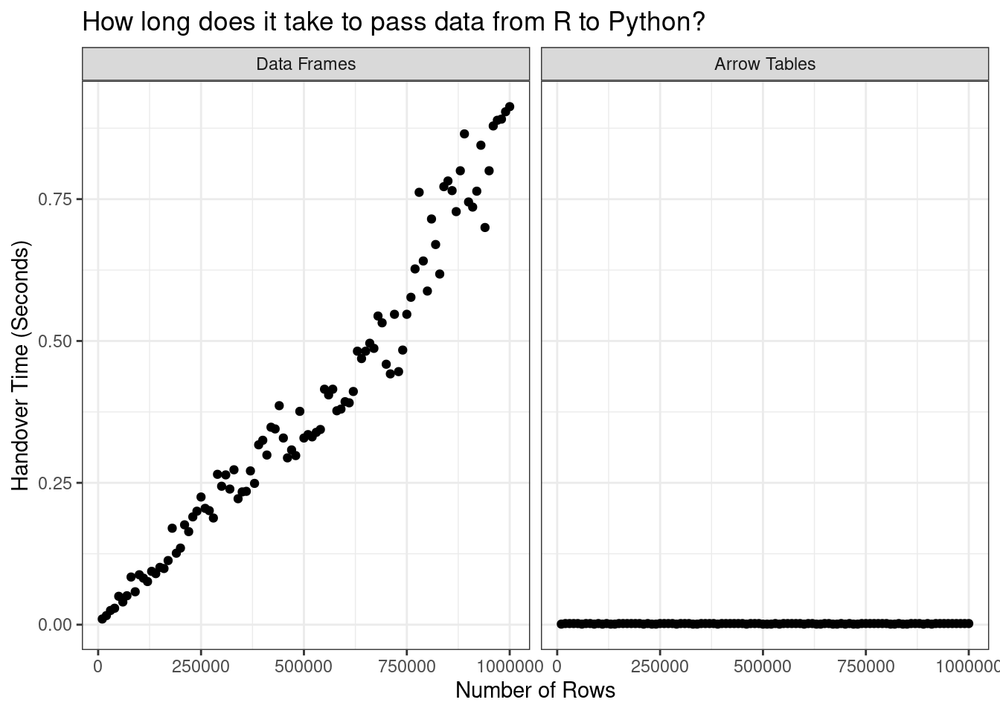

![]()
[R code]
library(reticulate)September 1, 2022
As the 21st century gears up for its quarter-life crisis, the trend in data science is toward multi-language tools. I use quarto to write this blog, a document preparation system that supports code evaluation in R, Python, Julia, and more. My work revolves around Apache Arrow, a toolbox for data analysis and interchange with implementations in multiple languages. You get the idea. In one sense this new development is fantastic – your language of choice is much more likely to be supported in the future than it ever was in the past. In another sense it is daunting – it sometimes feels like we need to learn all the things in order to get by in this brave new world. Meanwhile we all have our actual jobs to do and we don’t have the time. In the immortal words of Bob Katter,
I mean, you know, people are entitled to their sexual proclivities. Let there be a thousand blossoms bloom as far as I’m concerned, you know…
[pauses, expression turns dark]
…but I ain’t spending any time on it because, in the meantime, every three months a person is torn to pieces by a crocodile in North Queensland
I mean, he makes a good point?1 There’s a lot going on in the data science world, none of us can keep pace with all of it, and we’re all trying our best not to be eaten by crocodiles.
In the spirit of saving you from at least one reptilian threat, this post is a quick primer on how to efficiently pass control of a large data set between R and Python without making any wasteful copies of the data.
The idea to write this post came from a recent discussion on twitter about passing control of a data set from R to Python within a Quarto document like this one. The part of the discussion that really caught my I was this part:2
Cass Wilkinson Saldaña: If you were working on a bilingual (Python + R) Quarto project, and you’d want to hand off your (brilliantly cleaned, happy, thriving) tibble to a modeling stack in Python, how would you conduct the handoff?
Michael Chow: For something quick I might try handing off with reticulate, but if there were any ounce of uncertainty or pain I’d bail out to saving with arrow (or to a CSV).
Jon Keane: And with an arrow table (or dataset) that handoff can be zero copy, zero serialization. We need to improve our docs around this but there’s an example in the tests that shows it off, and some documentation
Jon’s comment is the one that really caught my attention because they’re completely right: passing data back and forth between R and Python without making copies of the data3 is something that’s obnoxiously easy to do using Apache Arrow…
…but only if you know the trick, and the trick isn’t well documented yet.
The “trick” is simple: if your data are stored as an Arrow Table, and you use the reticulate package to pass it from R to Python (or vice versa), only the metadata changes hands. Because an Arrow Table has the same structure in-memory when accessed from Python as it does in R, the data set itself does not need to be touched at all. The only thing that needs to happen is the language on the receiving end needs to be told where the data are stored. Or, to put it another way, we just pass a pointer across. This all happens invisibly, so if you know how to use reticulate,4 you already know how to do this!
Yes yes Danielle, that’s all well and good, but what if I don’t know how to use reticulate? What if I’m one of those people who are vaguely aware that reticulate exists as an R package that provides an interface to Python, but haven’t actually used it and am not sure how to get started? What am I supposed to do then?
As it happens, you’re in luck. Until quite recently I was one of those people, and I’m deeply sympathetic. I’d somehow convinced myself that using reticulate would be super hard and require magic powers that I don’t have. Thankfully, it turned out to be much less painful than I feared, and I’ll walk you through the process (or at least the process I followed!) now.
If reticulate is not already on your system, you can install it from CRAN with install.packages("reticulate"). Once installed, you can load it in the usual fashion:
Next, we check that reticulate can find your Python environment if you have more than one make sure it’s finding the one you want to use! If you’re at all like me you’ll find you’ve managed to accumulate several different Python environments, often by accident. Currently I have four Python environments managed by miniconda:
# conda environments:
#
/home/danielle/.local/share/r-miniconda
/home/danielle/.local/share/r-miniconda/envs/arrow_env
/home/danielle/.local/share/r-miniconda/envs/r-reticulate
base /home/danielle/miniconda3The three environments in the “r-miniconda” folder exist because when I first started using reticulate I let it manage its own Python and miniconda installation. The commands I used at the time were these:
When I did this, reticulate set me up with a default Python build, managed by the copy of miniconda that it installed. This isn’t a bad thing,5 but also it isn’t the primary version of Python that I use when writing “everyday” Python code:6 my usual Python environment is the fourth one on the list above, and for the purposes of this post that’s the one I want reticulate to use. I can do this with use_miniconda(), explicitly specifying the condaenv to be used:
Now that my environment is set up I’m ready to use Python. When calling Python code from within R, some code translation is necessary due to the differences in syntax across languages. As a simple example, let’s say I have my regular Python session open and I want to check my Python version and executable. To do this I’d import the sys library:
3.9.12 (main, Apr 5 2022, 07:05:27)
[GCC 7.5.0]
/home/danielle/miniconda3/bin/pythonTo execute these commands from R, the code needs some minor changes. The import() function replaces the import keyword, and $ replaces . as the accessor:
[1] "3.9.12 (main, Apr 5 2022, 07:05:27) \n[GCC 7.5.0]"
[1] "/home/danielle/miniconda3/bin/python"The code looks more R-like, but Python is doing the work.7
One of the nice things about reticulate is that the Python functions it exposes are easy to use intermix with regular R code. I’ll give an illustration using the unbearably cute “art” library in Python. There’s a lot you can do with it, but for this post I’ll just use the decor() function that generates cute text decorations. This is what happens when I call it natively from Python:
When called from R with reticulate, the code looks like this:
So cute! 💕
Now let’s suppose I want to create a modified version of decor(). In the original decor() function, the first argument must be a single string that specifies the name of a decoration. Examples include "heart9", "wave3", or anything other pattern known to the decor() function. You can only pass one string: it does not accept vectors. What I’d like to do in my modified version is pass a numeric vector as input, and receive a vector of heart decorations as output.
Although the original decor() function is written in Python, I can write the code for my modified function entirely in R. I don’t have to write any Python code unless I desperately want to. Here’s one way of implementing the modified function using the purrr functional programming toolkit:
[R code]
[1] "~~<💚>~~" "~~><~~>💖" "─═ڿڿۣڿ═─💖─═ڿڿۣڿ═─"
[4] "༺♥༻❀༺♥༻💕" "💗💜.¸¸.•´¯`☆ºஇ•´♥" "-♥-♡--^["
[7] "*•.¸♡" "╚»♡«╝" "´*•.¸(*•.¸♥¸.•*´)¸.•*´"Yay! Vectorised prettiness! 😍
Okay, now that we understand the basics of reticulate, it’s time to tackle the problem of transferring data sets between R and Python. For now, let’s leave Arrow out of this. All we’re going to do is take an ordinary R data frame and transfer it to Python.
First, let’s load some data into R. Sticking to the reptilian theme we’ve got going here, the data are taken from The Reptile Database (accessed August 31 2022), an open and freely available catalog of reptile species and their scientific classifications.8
# A tibble: 14,930 × 10
taxon_id family subfa…¹ genus subge…² speci…³ autho…⁴ infra…⁵ infra…⁶ infra…⁷
<chr> <chr> <chr> <chr> <lgl> <chr> <chr> <chr> <chr> <chr>
1 Ablepha… Scinc… Eugong… Able… NA alaicus ELPATJ… <NA> <NA> <NA>
2 Ablepha… Scinc… Eugong… Able… NA alaicus ELPATJ… subsp. alaicus ELPATJ…
3 Ablepha… Scinc… Eugong… Able… NA alaicus ELPATJ… subsp. kucenk… NIKOLS…
4 Ablepha… Scinc… Eugong… Able… NA alaicus ELPATJ… subsp. yakovl… (EREMC…
5 Ablepha… Scinc… Eugong… Able… NA anatol… SCHMID… <NA> <NA> <NA>
6 Ablepha… Scinc… Eugong… Able… NA bivitt… (MENET… <NA> <NA> <NA>
7 Ablepha… Scinc… Eugong… Able… NA budaki GÖCMEN… <NA> <NA> <NA>
8 Ablepha… Scinc… Eugong… Able… NA cherno… DAREVS… <NA> <NA> <NA>
9 Ablepha… Scinc… Eugong… Able… NA cherno… DAREVS… subsp. cherno… DAREVS…
10 Ablepha… Scinc… Eugong… Able… NA cherno… DAREVS… subsp. eiselti SCHMID…
# … with 14,920 more rows, and abbreviated variable names ¹subfamily,
# ²subgenus, ³specific_epithet, ⁴authority, ⁵infraspecific_marker,
# ⁶infraspecific_epithet, ⁷infraspecific_authorityCurrently this object is stored in-memory as an R data frame and we want to move it to Python. However, because Python data structures are different from R data structures, what this actually requires us to do is make a copy of the whole data set inside Python, using a Python-native data structure (in this case a Pandas DataFrame). Thankfully, reticulate does this seamlessly with the r_to_py() function:
taxon_id ... infraspecific_authority
0 Ablepharus_alaicus ... NA
1 Ablepharus_alaicus_alaicus ... ELPATJEVSKY, 1901
2 Ablepharus_alaicus_kucenkoi ... NIKOLSKY, 1902
3 Ablepharus_alaicus_yakovlevae ... (EREMCHENKO, 1983)
4 Ablepharus_anatolicus ... NA
... ... ... ...
14925 Zygaspis_quadrifrons ... NA
14926 Zygaspis_vandami ... NA
14927 Zygaspis_vandami_arenicola ... BROADLEY & BROADLEY, 1997
14928 Zygaspis_vandami_vandami ... (FITZSIMONS, 1930)
14929 Zygaspis_violacea ... NA
[14930 rows x 10 columns]Within the Python session, an object called r has been created: the Pandas DataFrame object is stored as r.py_taxa, and we can manipulate it using Python code in whatever fashion we normally might. To keep things simple, all I’ll do here is count the number of entries in the data set for each reptilian family:
taxon_id
family
Acrochordidae 3
Agamidae 677
Alligatoridae 16
Alopoglossidae 32
Amphisbaenidae 206
... ...
Xenodermidae 30
Xenopeltidae 2
Xenophidiidae 2
Xenosauridae 15
Xenotyphlopidae 1
[93 rows x 1 columns]Of course, I could have done this in R using dplyr functions but that’s not the point of the post. What matters for our purposes is that counts is a Pandas DataFrame that we’d like to pull back from the Python session into our R session.
Again, this turns out to be easier than I was expecting. The reticulate package exposes an object named py to the user, and any objects I created in my Python session can be accessed that way:
taxon_id
Acrochordidae 3
Agamidae 677
Alligatoridae 16
Alopoglossidae 32
Amphisbaenidae 206
Anguidae 113
Aniliidae 3
Anomalepididae 23
Anomochilidae 3
...What’s especially neat is that the data structure has been automatically translated for us: the counts object in Python is a Pandas DataFrame, but when accessed from R it is automatically translated into a native R data structure: py$counts is a regular data frame:
The example in the previous section looks smooth and seamless because the data set is small. However, it is fundamentally inefficient for the simple reason that a Pandas DataFrame looks different in memory to an R data frame. It’s not possible for the two languages to share a single copy of the data because they don’t agree on what “the data” are. To handover data from R to Python (or vice versa) it is necessary to copy the data set and convert it to a more appropriate format.
When the data set is small, this is not a problem. But as your data set grows, it becomes ever more burdensome. These copy-and-convert operations are not cheap.
Wouldn’t it be nice if R and Python could both agree to represent the data as, oh let’s say…. an Arrow Table? On the R side we could interact with it using the arrow R package, and on the Python side we could interact with it using the pyarrow module. But regardless of which language we’re using, the thing in memory would be exactly the same… handing over the data set from one language to the other would no longer require any copying. A little metadata would change hands, and that’s all.
That sounds much nicer.
I’m not going to talk much about setting up arrow for R in this post, because I’ve written about it before! In addition to the installation instructions on the arrow documentation there’s a getting started with arrow post on this blog. But in any case, it’s usually pretty straightfoward: you can install the arrow R package from CRAN in the usual way using install.packages("arrow") and then load it in the usual fashion:
From there we’re good to go. Let’s start by reading the reptiles data directly from file into an Arrow Table:
[R code]
Table
14930 rows x 10 columns
$taxon_id <string>
$family <string>
$subfamily <string>
$genus <string>
$subgenus <null>
$specific_epithet <string>
$authority <string>
$infraspecific_marker <string>
$infraspecific_epithet <string>
$infraspecific_authority <string>Okay, what’s our next step? Well, in the previous example, the R data frame was handled on the Python side by the Pandas module. And as a consequence, you’d imagine that it was pretty important that my Python environment has Pandas installed right? The same is true when passing an Arrow Table: you need to have pyarrow installed on the Python side as well as arrow installed on the R side. So let’s do that.
As a convenience, the arrow package supplies a helper function called install_pyarrow() that calls the relevant reticulate functions for you, but for the purposes of this post I’ll show you the reticulate functions. The python environment I’m using in this post is managed by miniconda, so I’ll use conda_install() to do the work:
In this code, packages is the name of the to-be-installed python module, envname is the path to the conda environment, and conda is the path to the conda executable. As a general rule you don’t need to be this explicit: reticulate will find the environment and conda executable for you.
Next let’s import pyarrow on the Python side and check the version:
As an aside – because I’m on on linux and life on linux is dark and full of terrors – this didn’t actually work for me the first time I tried it, and naturally I was filled with despair. Instead of the nice output above, I got an error saying:
libstdc++.so.6: version `GLIBCXX_3.4.22' not foundAs usual, googling the error message led me to discover I needed to update the relevant library. It turned out to be an easy fix with this command:
Yet another catastrophe averted by copy/pasting into a search engine 🙃
After all that set up, it’s almost comically easy to do the transfer itself. It’s literally the same as last time: we call r_to_py(). The taxa_arrow variable refers to an Arrow Table on the R side, so now all I have to do is use r_to_py() to create py_taxa_arrow, a variable that refers to the same Arrow Table from the Python side:
Since we’re in Python now, let’s just switch languages and take a peek, shall we? Just like last time, objects created by reticulate are accessible on the Python side via the r object, so we access this object in Python with r.py_taxa_arrow:
pyarrow.Table
taxon_id: string
family: string
subfamily: string
genus: string
subgenus: null
specific_epithet: string
authority: string
infraspecific_marker: string
infraspecific_epithet: string
infraspecific_authority: string
----
taxon_id: [["Ablepharus_alaicus","Ablepharus_alaicus_alaicus","Ablepharus_alaicus_kucenkoi","Ablepharus_alaicus_yakovlevae","Ablepharus_anatolicus",...,"Plestiodon_egregius_onocrepis","Plestiodon_egregius_similis","Plestiodon_elegans","Plestiodon_fasciatus","Plestiodon_finitimus"],["Plestiodon_gilberti","Plestiodon_gilberti_cancellosus","Plestiodon_gilberti_gilberti","Plestiodon_gilberti_placerensis","Plestiodon_gilberti_rubricaudatus",...,"Zygaspis_quadrifrons","Zygaspis_vandami","Zygaspis_vandami_arenicola","Zygaspis_vandami_vandami","Zygaspis_violacea"]]
family: [["Scincidae","Scincidae","Scincidae","Scincidae","Scincidae",...,"Scincidae","Scincidae","Scincidae","Scincidae","Scincidae"],["Scincidae","Scincidae","Scincidae","Scincidae","Scincidae",...,"Amphisbaenidae","Amphisbaenidae","Amphisbaenidae","Amphisbaenidae","Amphisbaenidae"]]
subfamily: [["Eugongylinae","Eugongylinae","Eugongylinae","Eugongylinae","Eugongylinae",...,"Scincinae","Scincinae","Scincinae","Scincinae","Scincinae"],["Scincinae","Scincinae","Scincinae","Scincinae","Scincinae",...,null,null,null,null,null]]
genus: [["Ablepharus","Ablepharus","Ablepharus","Ablepharus","Ablepharus",...,"Plestiodon","Plestiodon","Plestiodon","Plestiodon","Plestiodon"],["Plestiodon","Plestiodon","Plestiodon","Plestiodon","Plestiodon",...,"Zygaspis","Zygaspis","Zygaspis","Zygaspis","Zygaspis"]]
subgenus: [11142 nulls,3788 nulls]
specific_epithet: [["alaicus","alaicus","alaicus","alaicus","anatolicus",...,"egregius","egregius","elegans","fasciatus","finitimus"],["gilberti","gilberti","gilberti","gilberti","gilberti",...,"quadrifrons","vandami","vandami","vandami","violacea"]]
authority: [["ELPATJEVSKY, 1901","ELPATJEVSKY, 1901","ELPATJEVSKY, 1901","ELPATJEVSKY, 1901","SCHMIDTLER, 1997",...,"BAIRD, 1858","BAIRD, 1858","(BOULENGER, 1887)","(LINNAEUS, 1758)","OKAMOTO & HIKIDA, 2012"],["(VAN DENBURGH, 1896)","(VAN DENBURGH, 1896)","(VAN DENBURGH, 1896)","(VAN DENBURGH, 1896)","(VAN DENBURGH, 1896)",...,"(PETERS, 1862)","(FITZSIMONS, 1930)","(FITZSIMONS, 1930)","(FITZSIMONS, 1930)","(PETERS, 1854)"]]
infraspecific_marker: [[null,"subsp.","subsp.","subsp.",null,...,"subsp.","subsp.",null,null,null],[null,"subsp.","subsp.","subsp.","subsp.",...,null,null,"subsp.","subsp.",null]]
infraspecific_epithet: [[null,"alaicus","kucenkoi","yakovlevae",null,...,"onocrepis","similis",null,null,null],[null,"cancellosus","gilberti","placerensis","rubricaudatus",...,null,null,"arenicola","vandami",null]]
infraspecific_authority: [[null,"ELPATJEVSKY, 1901","NIKOLSKY, 1902","(EREMCHENKO, 1983)",null,...,"(COPE, 1871)","(MCCONKEY, 1957)",null,null,null],[null,"(RODGERS & FITCH, 1947)","(VAN DENBURGH, 1896)","(RODGERS, 1944)","(TAYLOR, 1936)",...,null,null,"BROADLEY & BROADLEY, 1997","(FITZSIMONS, 1930)",null]]The output is formatted slightly differently because the Python pyarrow library is now doing the work. You can see from the first line that this is a pyarrow Table, but nevertheless when you look at the rest of the output it’s pretty clear that this is the same table.
Easy!
Right then, what’s next? Just like last time, let’s do a little bit of data wrangling on the Python side. In the code below I’m using pyarrow to do the same thing I did with Pandas earlier: counting the number of entries for each reptile family.
[python code]
pyarrow.Table
taxon_id_count: int64
family: string
----
taxon_id_count: [[3,677,16,32,206,...,2,2,15,1,5]]
family: [["Acrochordidae","Agamidae","Alligatoridae","Alopoglossidae","Amphisbaenidae",...,"Xenopeltidae","Xenophidiidae","Xenosauridae","Xenotyphlopidae",null]]Flipping back to R, the counts_arrow object is accessible via the py object. Let’s take a look:
The output is formatted a little differently because on this side it is the R arrow package printing the output, but it’s the same Table.
Mission accomplished!
Okay… one more thing. But it’s an important one!
At the end of all this, you might want to know if using Arrow makes much of a difference. As much as I love learning new things for the sheer joy of learning new things, I prefer to learn useful things when I can! So let’s do a little comparison. First, I’ll load a few more packages…
Next, I’ll define a handover_time() function that takes two arguments. The first argument n specifies the number of rows in the to-be-transferred data set. The second argument arrow is a logical value: setting arrow = FALSE means that an R data frame will be passed to Python as a Panda DataFrame, wheras arrow = TRUE means that an Arrow Table in R will be passed to Python and remain an Arrow Table. The actual data set is constructed by randomly sampling n rows from the taxa data set (with replacement):
Now that I’ve defined the test function, let’s see what happens. I’ll vary the number of rows from 10000 to 1000000 for both the native data frame version and the Arrow Table version, and store the result as times:
Now let’s plot the data:
[R code]
times |>
pivot_longer(
cols = c("data_frame", "arrow_table"),
names_to = "type",
values_to = "time"
) |>
mutate(
type = type |>
factor(
levels = c("data_frame", "arrow_table"),
labels = c("Data Frames", "Arrow Tables")
)
) |>
ggplot(aes(n, time)) +
geom_point() +
facet_wrap(~type) +
theme_bw() +
labs(
x = "Number of Rows",
y = "Handover Time (Seconds)",
title = "How long does it take to pass data from R to Python?"
)
Okay yeah. I’ll be the first to admit that this isn’t a very sophisticated way to do benchmarking, but when the difference is this stark you really don’t have to be sophisticated. Without Arrow, the only way to hand data from R to Python is to copy and convert the data, and that’s time consuming. The time cost gets worse the larger your data set becomes. With Arrow, the problem goes away because you’re not copying the data at all. The time cost is tiny and it stays tiny even as the data set gets bigger.
Seems handy to me?
A good point about data science, that is. I’m not convinced it was a stellar contribution to the discussion of LGBT rights in the antipodes. Although frankly it wasn’t the worst comment on same sex marriage I saw an Australian politician make at the time, not by a loooooong margin.↩︎
I’ve edited the exchange ever so slightly to improve clarity and to insert readable link text to assist screenreaders.↩︎
I’ll talk more about this later, but for now it’s enough to note that when you have really big data sets the absolute last thing you want to do is make unnecessary copies – it eats up a looooot of your compute time!↩︎
Something to note here is that the reticulate solution implicitly assumes R is your “primary” language and Python is the “secondary” language. That is, reticulate is an R package that calls Python, not a Python module that calls R. Simularly, this quarto document uses the knitr engine (also an R package) to integrate code from the two languages. Yes the tools are multi-language, but the setup is pretty R-centric. Arguably this is typical for how an R user would set up a multi-language project, and since R is my primary language it’s my preferred solution. However, it’s not a particularly Pythonic way of approaching the problem. But fear not, Python fans. In the next post I’m going to describe an approach that solves the same problem in a Python-centric way.↩︎
In fact, it’s often a good idea to let reticulate do its own thing!↩︎
Okay fine I don’t write Python code every day but you know what I mean…↩︎
As an aside it’s worth noting that reticulate exports an object called py, from which Python objects can be accessed: the sys object can also be referred to as py$sys.↩︎
Note that the website does not explicitly specify a particular licence, but journal articles documenting the database written by the maintainers do refer to it as “open and freely available”. With that in mind I take it that the use of the data in this post is permitted. Naturally, should I discover that it is not I’ll immediately remove it!↩︎
@online{navarro2022,
author = {Danielle Navarro},
editor = {},
title = {Passing {Arrow} {Tables} Between {R} and {Python} with
Reticulate},
date = {2022-09-01},
url = {https://blog.djnavarro.net/posts/2022-09-01_reticulated-arrow},
langid = {en}
}